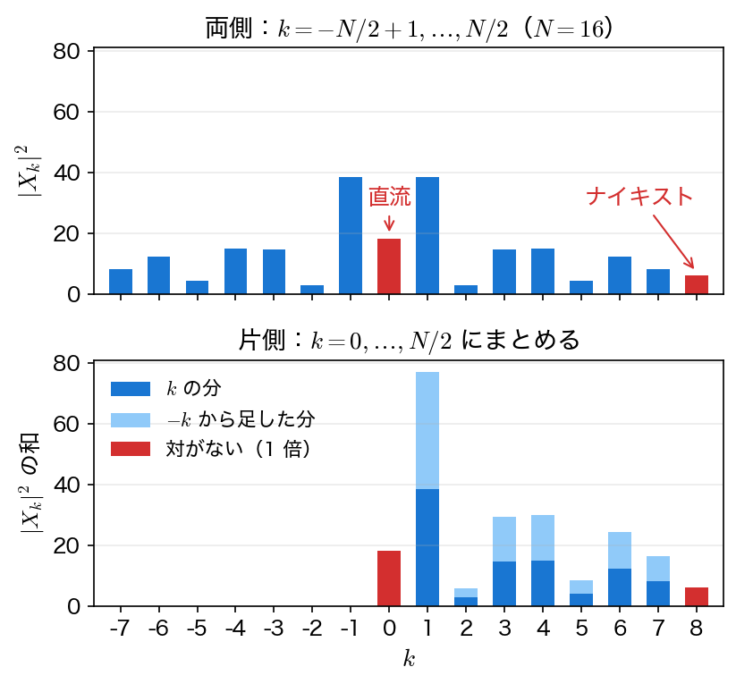
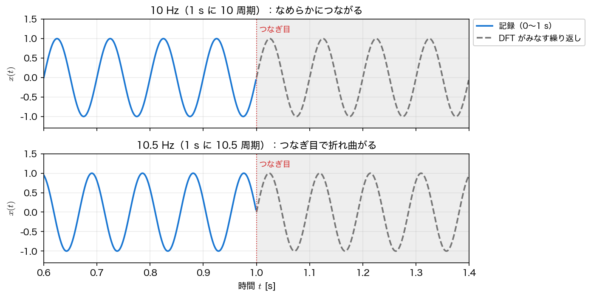
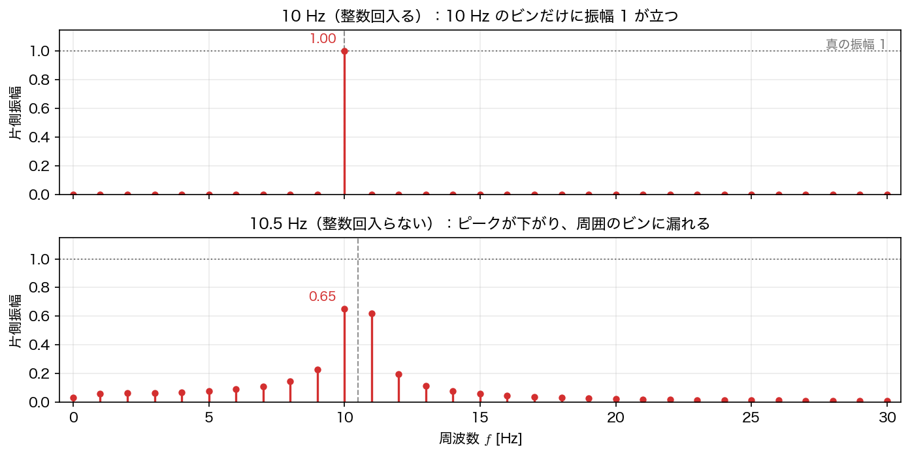
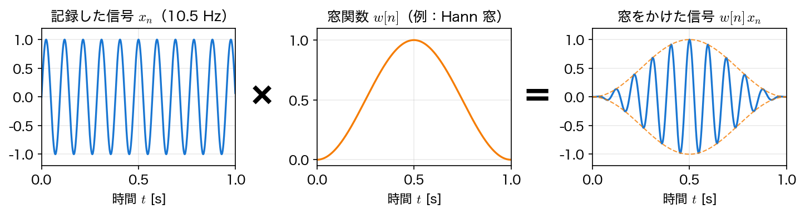
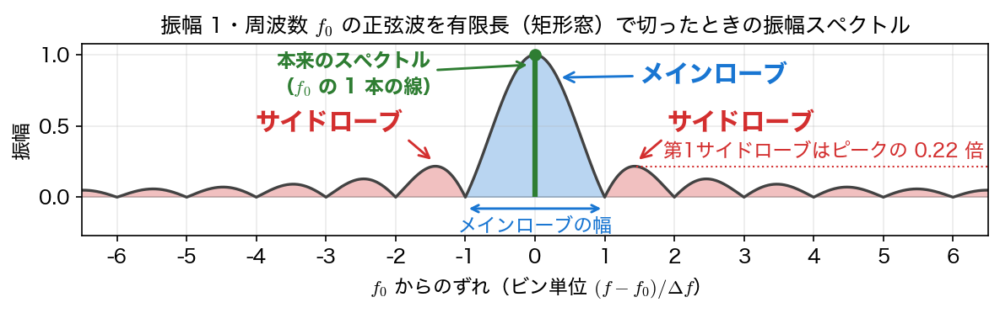
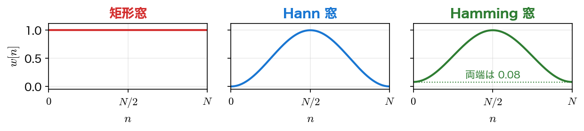
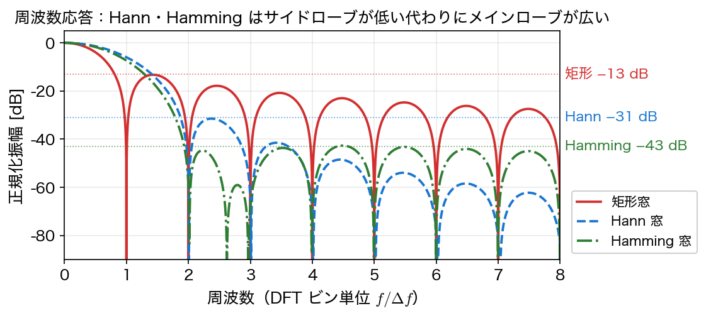
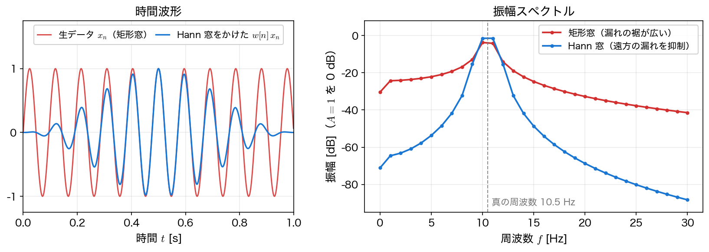

パワースペクトルと窓関数
第3回では FFT で 振幅スペクトル を求めた。本ページでは、まず 電力 を定義して パワースペクトル を導入し、続いて有限長観測がもたらす スペクトル漏れ（リーケージ） と、その緩和策である 窓関数 を扱う。
第3回 の DFT を振り返る。サンプリング周波数 \(f_s\) で測った \(N\) 個のサンプル \(x_0,\dots,x_{N-1}\) の DFT は
である。\(X_k\) は周波数 \(f_k=kf_s/N\) の成分に対応し、周波数の刻み（周波数分解能）は \(\Delta f=f_s/N=1/T\) である（\(T=N/f_s\) は観測時間）。実数信号では \(k=0,1,\dots,\lfloor N/2\rfloor\) の片側で足りる（rfft, rfftfreq）。\(f_k\) の 1 つ 1 つを ビン と呼び、\(f_k\) をビンの中心、\(\Delta f\) をビンの幅とみる。
周波数 \(f_k\) の成分の振幅（片側振幅）は \(2\lvert X_k\rvert/N\) で、直流とナイキストは \(\lvert X_k\rvert/N\) である。片側振幅を \(f_k\) に対して並べたものが（片側の）振幅スペクトル である。
パワースペクトル
エネルギーとパワー
第3回のパーセバルの定理 では、\(\int\lvert f(t)\rvert^2dt\) を信号の 全エネルギー と呼んだ。矩形パルスのように全エネルギーが有限な信号なら、その周波数ごとの内訳がエネルギースペクトル密度 \(\lvert F(\omega)\rvert^2\) である。一方、正弦波や雑音のように永遠に続く信号は、全エネルギーが無限大になる。
そこで単位時間あたりのエネルギーで測る。これを 電力（パワー）という。長さ \(T\) の記録では、\(x^2\) の時間平均が 平均電力 になる。
振幅 \(A\) の正弦波の平均電力は \(A^2/2\)、平均 \(0\)・標準偏差 \(\sigma\) の雑音の平均電力は \(\sigma^2\) である。\(A^2/2\) は \(\sin^2\) の 1 周期の平均が \(1/2\) であることから、\(\sigma^2\) は平均 \(0\) なら \(x^2\) の平均が分散になることから出る。
「電力」という名前は、電圧 \(x\) [V] を \(1\,\Omega\) の抵抗にかけると消費する電力が \(x^2\) [W] になることによる。この対応から、\(x\) の単位によらず \(x^2\) を電力、その時間積分をエネルギーと呼ぶ。
パワースペクトル密度（PSD）
振幅スペクトル（\(\lvert X_k\rvert\) に比例する）は、各周波数成分の「大きさ」を表す。電力は振幅の 2 乗に比例するので、電力が周波数ごとにどう分かれるかは パワースペクトル \(\lvert X_k\rvert^2\) で見る。信号を確率的（雑音を含む）とみなすときは、これを単位周波数あたりにした パワースペクトル密度（PSD, Power Spectral Density） を使う。有限長の記録から計算するのは、その 推定値
である。単位は \([\text{V}^2/\text{Hz}]\) である。単位周波数あたりの量なので、周波数の刻み \(\Delta f=f_s/N\) を掛けて全周波数で足すと、信号の平均電力に等しくなる（第3回のパーセバルの定理 の離散版）。
ハット付きの \(\hat S_{xx}\) は推定値の意味である。真の PSD の定義（確率過程としての定義）には、本講義では立ち入らない。
片側にまとめる 2 倍
rfftの片側（\(f_k\ge0\)）だけで PSD を作るので、\(\pm f\) の 2 成分を足して 2 倍 する- 直流（\(k=0\)）と、\(N\) が偶数のときのナイキスト（\(k=N/2\)）は、対になる負の周波数をもたないので 1 倍
- \(N\) が奇数ならナイキストのビンは存在しない
- 片側振幅 \(2\lvert X_k\rvert/N\) の 2 倍と同じ理由である（直流とナイキストの片側振幅は \(\lvert X_k\rvert/N\)）
負の添字 \(-k\) は、第3回 の \(N-k\) と同じビンである。実信号では \(X_{N-k}=\overline{X_k}\) なので、\(\pm k\) の \(\lvert X_k\rvert^2\) は等しい。\(k=0\) と \(k=N/2\) では \(N-k\) が自分自身になる（\(N\) は \(0\) と同じビン）ので、対をもたない。両側のビンを \(k=-N/2+1,\dots,N/2\) に並べたのが次の図である。

スペクトル漏れ（リーケージ）
第3回の最後に触れたとおり、信号の周期が観測区間に整数回入らないと、ピークが周囲ににじむ スペクトル漏れ（リーケージ） が起きる。DFT は有限区間を切り取り、それを 周期的に繰り返す とみなす。周期が整数回入らないと、記録の端で波形がなめらかにつながらない（一般には値や傾きが不連続になる）。このつながりの悪さが、偽の周波数成分を生む。

どれくらい深刻かを、振幅 \(1\)、周波数 \(10.5\) Hz の正弦波を \(T=1\) s（\(\Delta f=1\) Hz）測って確かめる。\(10.5\) Hz は \(10\) Hz と \(11\) Hz のビン中心のちょうど中間で、ピーク振幅の落ち込みが最も大きくなる標準的な最悪ケースである。
import numpy as np
fs, T = 1000.0, 1.0 # T=1s → Δf=1Hz
N = int(fs * T)
t = np.arange(N) / fs
x = np.sin(2*np.pi*10.5*t) # 10Hz と 11Hz の真ん中
freq = np.fft.rfftfreq(N, 1/fs)
amp = 2 * np.abs(np.fft.rfft(x)) / N
far = np.abs(freq - 10.5) > 3 # 3Hz より遠い周波数
print(f"ピーク振幅 = {amp.max():.4f} (真値 1.0)")
print(f"遠方(>3Hz離れ)への漏れ最大 = {amp[far].max():.4f}")
ピーク振幅は真値 \(1.0\) から \(0.65\) へ 34.8% 低下 し、\(3\) Hz 以上離れた周波数にも最大 \(0.11\) の偽の成分が出る。\(10\) Hz ちょうど（整数回入る）なら振幅は \(1.0\) ぴったりに出るので、これは純粋に「切り取り」が生む誤差である。周波数がビン中心からずれたことによるピーク振幅の落ち込みを スキャロッピング損失 と呼ぶ。

窓関数
漏れの原因が記録の端でのつながりの悪さなら、区間の端に向かって信号を小さくして（テーパして） から FFT すればよい。
この重み \(w[n]\) を 窓関数（window function） と呼ぶ。何もかけない（\(w[n]=1\)）のは、矩形窓 をかけたのと同じである。

メインローブとサイドローブ
窓の性能は、窓そのもののフーリエ変換（周波数応答）の形で決まる。

中央の山を メインローブ、その両脇に並ぶ小さな山を サイドローブ と呼ぶ。メインローブが狭いほど、近い 2 つの周波数を分けられる（分解能 が高い）。サイドローブが低いほど、遠くの周波数への漏れが少ない。ただし、サイドローブの低い窓（下の表の Hann・Hamming）は、矩形窓と比べるとメインローブが広い。漏れと分解能の トレードオフ である。
代表的な窓
| 窓 | \(w[n]\)（\(n=0,\dots,N-1\)） | 特徴 |
|---|---|---|
| 矩形窓 | \(1\) | 窓なし。メインローブ最も狭いが漏れ最大 |
| Hann 窓 | \(0.5\left(1-\cos\dfrac{2\pi n}{N}\right)\) | 漏れと分解能のバランスがよい定番 |
| Hamming 窓 | \(0.54-0.46\cos\dfrac{2\pi n}{N}\) | 第1サイドローブが最も低い |
表は分母を \(N\) とする流儀（周期窓）である。np.hanning(N) は分母を \(N-1\) とする対称窓を返すが、差は \(N\) が大きければ実用上ほとんど変わらないので、本講義では立ち入らない。

窓の周波数応答

デシベル（dB）
上の周波数応答の図の縦軸は デシベル（dB） である。大きさが何桁も違う値を 1 枚の図で比べるため、スペクトルの縦軸は dB で描くことが多い。振幅 \(a\) と、電力や PSD のように振幅の 2 乗に比例する量 \(p\) は、それぞれ次のように dB に直す。
\(p\propto a^2\) なので、どちらで直しても同じ値になる。電力が 10 倍で \(+10\) dB、振幅が 10 倍で \(+20\) dB、振幅が半分で約 \(-6\) dB である。上の図の矩形窓の第1サイドローブ \(-13\) dB は、振幅でいえば約 \(0.22\) 倍にあたる。
Hann 窓による漏れの抑制
同じ \(10.5\) Hz の信号に Hann 窓をかける。cg で割るのは振幅の補正で、後で説明する。
w = np.hanning(N) # Hann 窓
cg = w.sum() / N # コヒーレントゲイン ≈ 0.5
amp_w = 2 * np.abs(np.fft.rfft(x * w)) / N / cg # 振幅補正込み
pk, lk = amp_w.max(), amp_w[far].max()
print(f"Hann: ピーク振幅 {pk:.4f} 遠方漏れ {lk:.4f}")
遠方への漏れは \(0.109\to0.008\) へ 1 桁以上減った。ピーク振幅も \(0.65\to0.85\) と真値に近づく。メインローブが広がったぶん隣のビンにも分かれるので、\(1.0\) にはならない。

振幅補正（コヒーレントゲイン）
窓をかけると信号を平均的に小さくしてしまうので、振幅を正しく読むには補正が要る。窓の平均値
で割れば、正弦波のピーク振幅が復元される。Hann 窓ではこの値が \(0.5\) なので、振幅は 2 倍 して補正する（上のコードの / cg）。
補正が正確になる条件
この補正で振幅が完全に戻るのは、正弦波の周波数が DFT のビン中心にぴったり乗っているときに限る。\(10\) Hz（ビン中心）の正弦波に Hann 窓をかけて補正すると、振幅は \(1.0000\) になる。一方、\(10.5\) Hz では補正後も \(0.8491\) である（矩形窓の \(0.6521\) よりはずっとましだが、\(1.0\) ではない）。ビンからずれたぶんのスキャロッピング損失が残るからである。ピーク振幅を正確に読みたいときは、ピーク近傍の複数のビンを合わせて使う（補間する）。
まとめ
- パワースペクトル \(\lvert X_k\rvert^2\) と、単位周波数あたりにした PSD の推定値 \(\hat S_{xx}(f_k)=\lvert X_k\rvert^2/(f_sN)\)（片側は直流・ナイキスト以外を 2 倍）。雑音を含む信号のスペクトルはこれで測る。
- 周期が観測区間に整数回入らないと スペクトル漏れ が起き、振幅さえ正しく読めない（\(10.5\) Hz で振幅が \(0.65\) に低下）。
- 窓関数 で両端をなめらかに落とすと漏れが減る。代わりに、メインローブは矩形窓と比べると広がる（トレードオフ）。いちばん高いサイドローブは矩形 \(-13\) dB、Hann \(-31\) dB、Hamming \(-43\) dB である。
- 窓をかけたら コヒーレントゲイン（Hann \(=0.5\)）で振幅を補正する。ただし補正が完全なのはビン中心の正弦波に限る。
次は、雑音を含む信号のスペクトルを安定に推定する ピリオドグラムとウェルチ法 に進む。